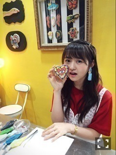

| 2016/08 07 Sun | 克服。732回目 |
毎日暑い日々が続いております。
名古屋ライブ2日間
ありがとうございました。
1日目終わり、目から汗が出ました。
今日の昼公演、
樋口発声練習できたの嬉しかった！
ひなちま嬉しそうだった！！
次は仙台！
8月は体力勝負∠( 'ω')／
崩れませんように。
1時間遅れのI love you＼(^o^)／

部長＼(^o^)／
ジャージ＼(^o^)／
チンピラ＼(^o^)／

MdN＼(^o^)／
連載のお相手は
アイシングアーティストの
COOKIEBOYこと夏山孟浩さん！
アトリエに入った途端甘い香り。
リアルなタッチの絵と毒っ気のある
色合いが特徴のCOOKIEBOYさんの作品。
土台がクッキーだとこんなに可愛いんだ！
美味しい上に写真映えするものは
女の子は目がないのです。ね！
爬虫類、虫シリーズ
つくってほしいなあ(^L^)←個人的趣味
アイシング挑戦しましたが、
あんなに難しいとは。
また挑戦したい〜〜∠( `°∀°)／
今月号の特集の
キャラクターのリ・デザイン。
面白そう！！！
...
今日の夜公演で発表されましたが、
メンバー8人で新たな舞台に挑戦します。
『墓場、女子高生』
10月14日〜22日
東京ドームシティーシアターGロッソ
舞台は『すべての犬は天国へ行く』
以来になります。
犬天は、今でも思い出すくらい
刺激的で楽しかったな。
今回の舞台もそれくらいわくわくしてます。
まりか
コメント(676)
2016/08/07 22:06